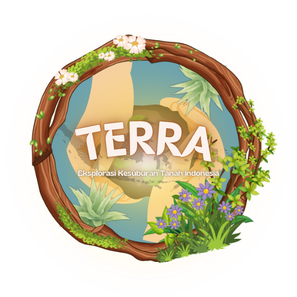
Mengenal jenis tanah dan tanaman terbaik di Nusantara
Jelajahi PetaWebsite ini dibuat sebagai media edukasi yang bertujuan untuk memberikan informasi mengenai kondisi tanah di Indonesia serta tanaman yang cocok untuk ditanam pada berbagai jenis tanah.
Dengan adanya website ini, diharapkan masyarakat dapat lebih memahami potensi sumber daya alam yang dimiliki Indonesia serta pentingnya menjaga kelestarian lingkungan.

Indonesia memiliki beragam jenis tanah akibat aktivitas vulkanik dan iklim tropis, dengan jenis utama meliputi Tanah Vulkanik (Andosol) yang sangat subur, Aluvial (endapan sungai), Gambut/Organosol (rawa), Podsolik Merah Kuning, Latosol, Kapur (Mediteran), Regosol, Litosol, Humus, dan Grumusol. Jenis-jenis tanah ini tersebar sesuai karakteristik geografisnya.
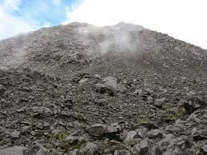
Tanah dari abu gunung berapi yang sangat subur dan cocok untuk sayuran, kopi, dan teh.
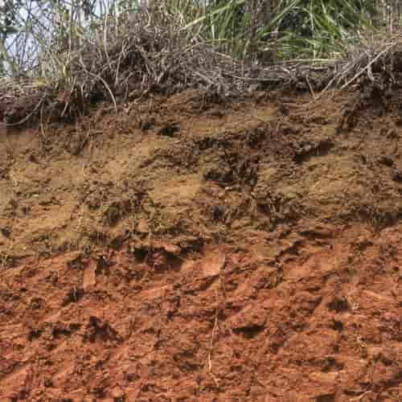
Terbentuk dari endapan sungai dan banyak digunakan untuk pertanian padi.
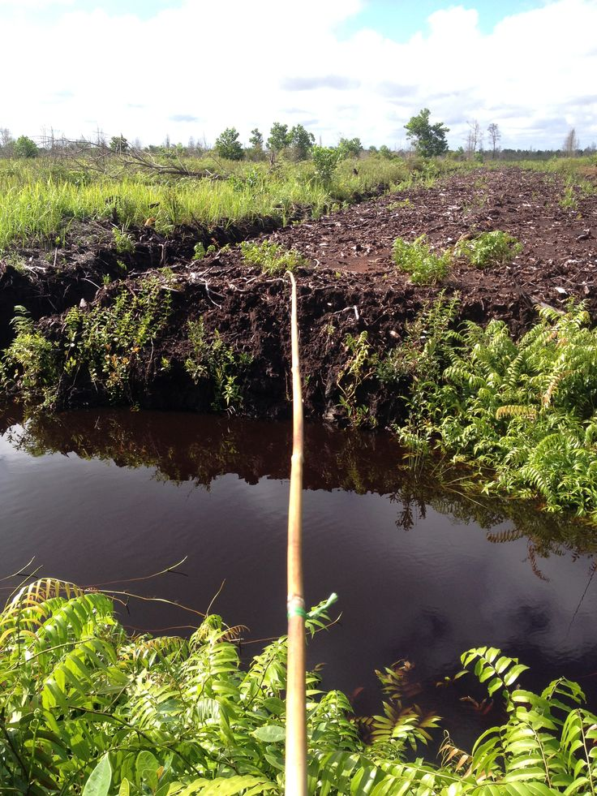
Tanah dari sisa tumbuhan yang membusuk dan banyak ditemukan di daerah rawa.
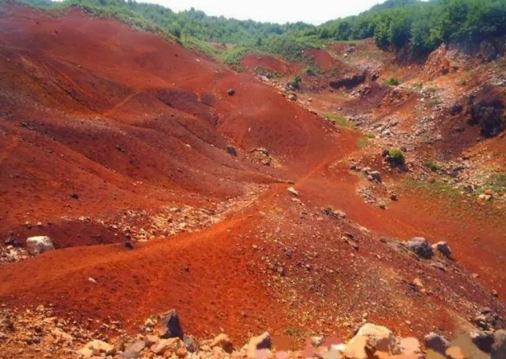
Tanah berwarna merah karena kandungan zat besi dan banyak ditemukan di daerah tropis.
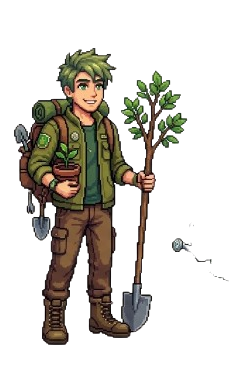
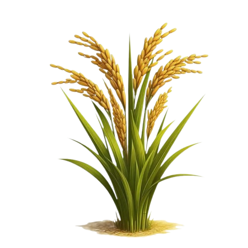
Tanah Aluvial
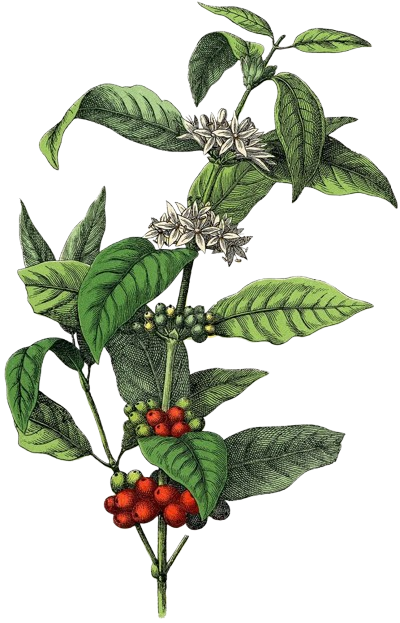
Tanah Vulkanik
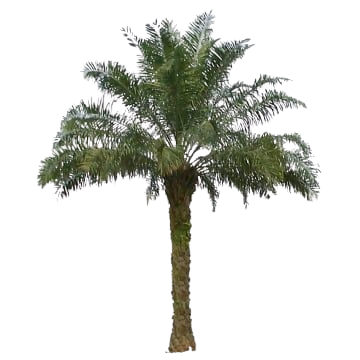
Tanah Gambut
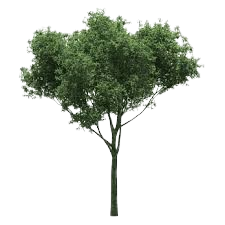
Tanah Laterit
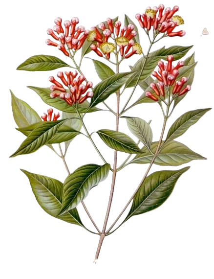
Tanah Latosol
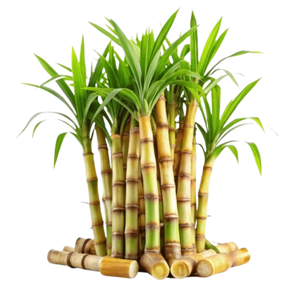
Tanah Grumusol
Deskripsi lengkap tanaman akan muncul di sini.
Gunakan peta interaktif di bawah ini untuk melihat persebaran jenis tanah di seluruh wilayah Indonesia.
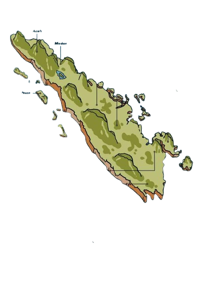
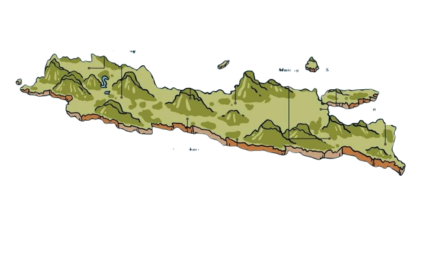
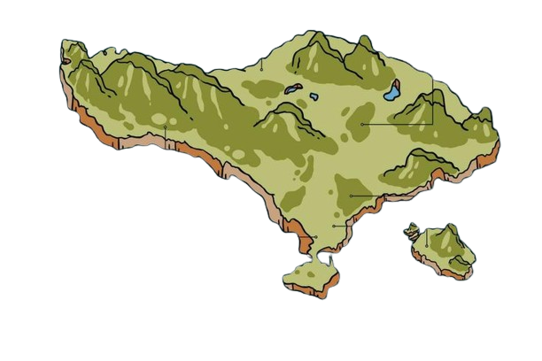
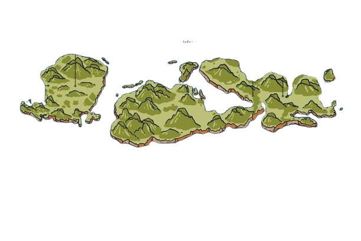
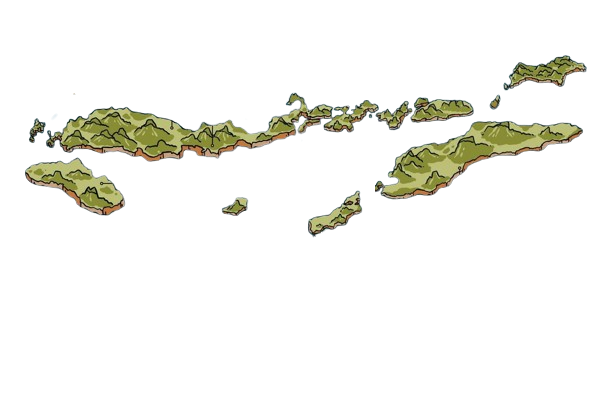
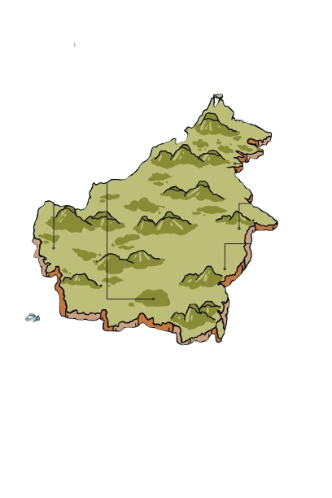
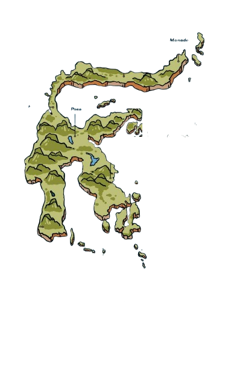
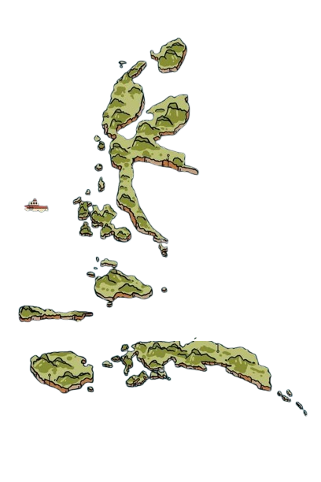
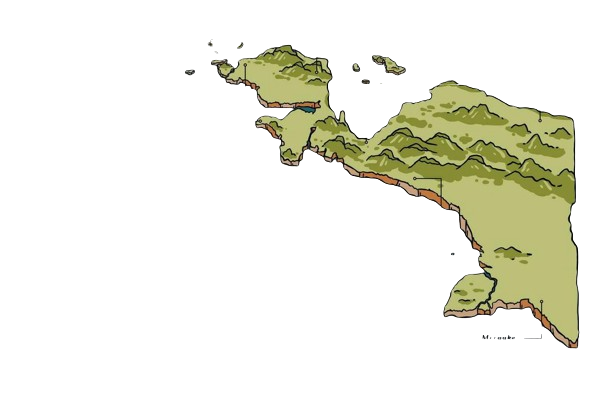
Wawasan mendalam mengenai tanah dan ekosistem nusantara melalui literasi digital.
Punya pertanyaan tentang ekosistem Nusantara? Mari berdiskusi!